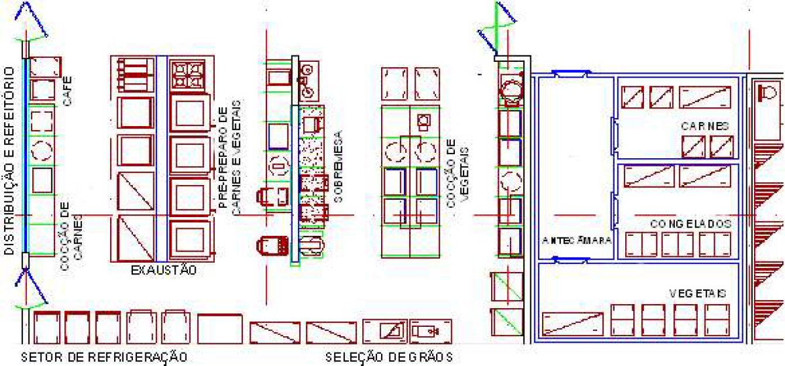

A figura acima apresenta o leiaute de uma unidade de alimentação e nutrição (UAN) que oferece dificuldades para o
estabelecimento de um fluxo de alimentos correto durante o período de preparo de refeições. Assinale a opção que
apresenta alteração nesse leiaute que permite melhorar o referido fluxo de produção.
-
Deslocar a seleção de grãos para o refeitório.
-
Trocar a posição da antecâmara com a da câmara de vegetais.
-
Aproximar o setor de refrigeração do setor de cocção de vegetais.
-
Deslocar o ambiente de pré-preparo de carnes e vegetais para local mais próximo das câmaras frigoríficas.
-
Deslocar o setor de preparo de sobremesa para local mais próximo do ambiente de cocção de carnes e de
distribuição.